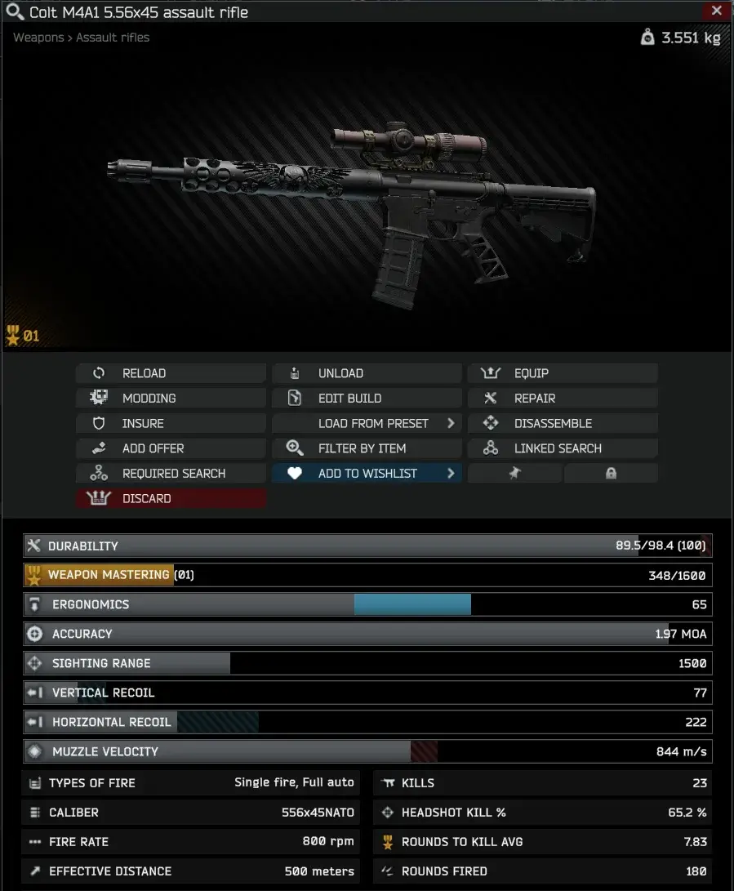

StatTrack
- Downloads
- 40,362
- Favourites
- 37
- Mod lists
- 91
Tarkov already tracks your total weapon class kills, but not individual weapons, nor weapon class headshots. Now you can track how well you do with that specific weapon before you lose it. Get that infinite KD, cause when you die and lose your weapon - it’s gone and so are its stats.

Installation
- Download StatTrack
- Open the downloaded zip file in 7-zip
- Select the SPT & BepInEx folders in the zip file in 7-zip
- Drag the SPT & BepInEx folders from 7-zip into your SPT folder
Demonstration Video (yoink):

- Delete
/ROOTSPT/Bepinex/plugins/acidphantasm-stattrack - Delete
/ROOTSPT/SPT/user/mods/acidphantasm-stattrack - Done
StatTrack is compatible with Fika.
- Do not install the Bepinex side of this mod on the Fika Headless client, it will not load.
- All clients should have it, but it is not required for all clients to have.
- The Fika Server must have the StatTrack Server side of the mod installed.
- Will allow you to adjust the size of the preview window for weapons, so weapons with a lot of attachments don’t get pushed off screen
- Uses StatTrack stats if it’s also installed for your leaderboard profile
Please comment on the hub page, or preferably create an issue on the GitHub, or more preferably visit #acidphantasm-mods in the SPT Discord!
If you enjoy my work - you can buy me a coffee~
Version
2.0.0
This version will only work for SPT 4.0.2+
Bugs Squashed
- Resolved issued with using StatTrack with Fika/Fika Headless
NOTE: DO NOT INSTALL THIS ON THE HEADLESS
Version
1.2.2
This version will only work for SPT 3.11.x
Bugs Squashed
- Fixed “new-to-you” weapons not tracking stats properly at all. Woops. Sorry.
Version
1.2.1
This version will only work for SPT 3.11.x
New Features
- Insurance Returns are now tracked as K/D
- Weapon Stat tracking json now backs up
- On-Hover stats displaying the stats for all other versions of that weapon are now only on the kills hover. All stats are displayed in 1 pane.
Changes
- Adjusted Insurance stat handling to better save/load when appropriate
Bugs Squashed
- Fixed Insurance updating stats if server is closed
Version
1.2.0
This version will only work for SPT 3.11.x
3.11 Update
New Features
- StatTrack is now a Client & Server mod
- Weapons will now track stats even when lost through Insurance (Thanks Tyfon)
Changes
- Optimized a lot of the client code
Version
1.1.0
This version will only work for SPT 3.10.X
New Features
- Now tracks all instances of a weapon as well (hover over stat)
- Now tracks rounds fired
- Now tracks rounds fired to kill average
**IF YOU HAVE BEEN ALREADY USING THIS MOD:
- The mod will display dashes instead of stats until you run a raid and fire a round.
- The on-hover stats (that track all instances) do not track retroactively. They will start at zero.
Version
1.0.0
This version will only work for SPT 3.10.X
Initial Release